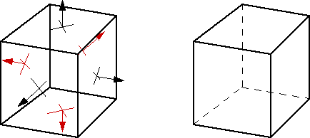
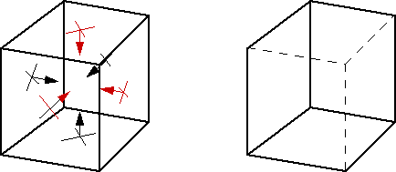
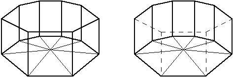

Polygons in 3D space have two sides: a front-face and a back-face. For a planar polygon, the front-face is defined by the direction of the plane's normal vector. The normal vector is perpendicular to the plane and points away from the front-face.
The normal vector can be derived from the order by which the polygon vertices are defined in the Face Table (see Polygonal Representation under Geometric Modeling).
In the real world, objects are made from material (solids) and the inside (i.e., the back-faces of an object) cannot possibly be seen from any viewpoint. For example, only the front-faces of a brick can be observed, but not the interior back-faces of the bounding polygons.
Removing all polygons that face the viewer with their back-faces from the scene is called 'back-face culling'. The removal reduces the computational needs for hidden surface calculations and for rendering significantly (by about 50%).
Example Cube: For the given outside viewpoint, three polygons (with red normals) are removed by culling as shown. However, if the viewpoint is placed inside cube, all faces are removed (VRML: 'solid' objects are invisible from the inside).

Back-face removal or back-face culling can also be used to open up enclosed spaces for the viewer.
Example Cube: If all surface normals point inside, the complete cube can only be viewed from the inside. However, an outside viewpoint as shown opens up the cube. The three rear faces with black normals are not removed because of their orientation towards the viewer and, therefore, remain visible.

Example: Opening up a cylindrical theater space from the outside (all normal vectors point towards the inside center).

Notes on Culling:
Several VRML nodes allow to specify the 'solid' field. If this field is TRUE, it activates culling by the browser. The object cannot be seen from the inside.
View culling (compared to back-face culling) is the process of eliminating entire objects that are invisible (e.g., completely outside of viewing frustum).


{kind=link}
{kind=link}